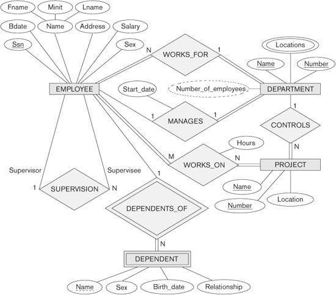
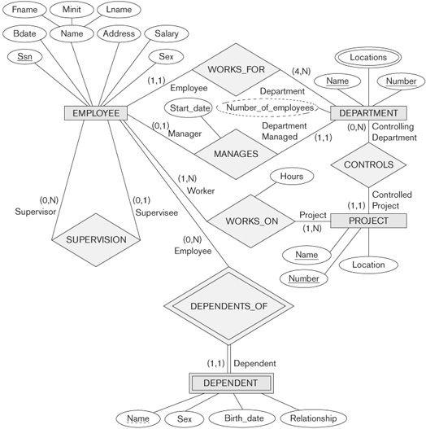

chapter 7
Data Modeling Using the Entity-Relationship (ER) Model
Conceptual modeling is a very important phase in designing a successful database application. Generally, the term database application refers to a particular database and the associated programs that implement the database queries and updates. For example, a BANK database application that keeps track of customer accounts would include programs that implement database updates corresponding to customer deposits and withdrawals. These programs provide user-friendly graphical user interfaces (GUIs) utilizing forms and menus for the end users of the application—the bank tellers, in this example. Hence, a major part of the database application will require the design, implementation, and testing of these application programs. Traditionally, the design and testing of application programs has been considered to be part of software engineering rather than database design. In many software design tools, the database design methodologies and software engineering methodologies are intertwined since these activities are strongly related.
In this chapter, we follow the traditional approach of concentrating on the database structures and constraints during conceptual database design. The design of application programs is typically covered in software engineering courses. We present the modeling concepts of the Entity-Relationship (ER) model, which is a popular high-level conceptual data model. This model and its variations are frequently used for the conceptual design of database applications, and many database design tools employ its concepts. We describe the basic data-structuring concepts and constraints of the ER model and discuss their use in the design of conceptual schemas for database applications. We also present the diagrammatic notation associated with the ER model, known as ER diagrams.
Object modeling methodologies such as the Unified Modeling Language(UML) are becoming increasingly popular in both database and software design. These methodologies go beyond database design to specify detailed design of software modules and their interactions using various types of diagrams. An important part of these methodologies—namely, class diagrams
1—are similar in many ways to the ER diagrams. In class diagrams, operations on objects are specified, in addition to specifying the database schema structure. Operations can be used to specify the functional requirements during database design, as we will discuss in Section 7.1. We present some of the UML notation and concepts for class diagrams that are particularly relevant to database design in Section 7.8, and briefly compare these to ER notation and concepts. Additional UML notation and concepts are presented in Section 8.6 and in Chapter 10.
This chapter is organized as follows: Section 7.1 discusses the role of high-level conceptual data models in database design. We introduce the requirements for a sample database application in Section 7.2 to illustrate the use of concepts from the ER model. This sample database is also used throughout the book. In Section 7.3 we present the concepts of entities and attributes, and we gradually introduce the diagrammatic technique for displaying an ER schema. In Section 7.4 we introduce the concepts of binary relationships and their roles and structural constraints. Section 7.5 introduces weak entity types. Section 7.6 shows how a schema design is refined to include relationships. Section 7.7 reviews the notation for ER diagrams, summarizes the issues and common pitfalls that occur in schema design, and discusses how to choose the names for database schema constructs. Section 7.8 introduces some UML class diagram concepts, compares them to ER model concepts, and applies them to the same database example. Section 7.9 discusses more complex types of relationships. Section 7.10 summarizes the chapter.
The material in Sections 7.8 and 7.9 may be excluded from an introductory course. If a more thorough coverage of data modeling concepts and conceptual database design is desired, the reader should continue to Chapter 8, where we describe extensions to the ER model that lead to the Enhanced-ER (EER) model, which includes concepts such as specialization, generalization, inheritance, and union types (categories). We also introduce some additional UML concepts and notation in Chapter 8.
7.1 Using High-Level Conceptual Data Models for Database Design
Figure 7.1 shows a simplified overview of the database design process. The first step shown is requirements collection and analysis. During this step, the database designers interview prospective database users to understand and document their data requirements. The result of this step is a concisely written set of users’ requirements. These requirements should be specified in as detailed and complete a form as possible. In parallel with specifying the data requirements, it is useful to specify the known functional requirements of the application. These consist of the user-defined operations (or transactions) that will be applied to the database, including both retrievals and updates. In software design, it is common to use data flow diagrams, sequence diagrams, scenarios, and other techniques to specify functional requirements. We will not discuss any of these techniques here; they are usually described in detail in software engineering texts. We give an overview of some of these techniques in Chapter 10.
Figure 7.1
A simplified diagram to illustrate the main phases of database design.
Once the requirements have been collected and analyzed, the next step is to create a conceptual schema for the database, using a high-level conceptual data model. This step is called conceptual design. The conceptual schema is a concise description of the data requirements of the users and includes detailed descriptions of the entity types, relationships, and constraints; these are expressed using the concepts provided by the high-level data model. Because these concepts do not include implementation details, they are usually easier to understand and can be used to communicate with nontechnical users. The high-level conceptual schema can also be used as a reference to ensure that all users’ data requirements are met and that the requirements do not conflict. This approach enables database designers to concentrate on specifying the properties of the data, without being concerned with storage and implementation details. This makes it is easier to create a good conceptual database design.
During or after the conceptual schema design, the basic data model operations can be used to specify the high-level user queries and operations identified during functional analysis. This also serves to confirm that the conceptual schema meets all the identified functional requirements. Modifications to the conceptual schema can be introduced if some functional requirements cannot be specified using the initial schema.
The next step in database design is the actual implementation of the database, using a commercial DBMS. Most current commercial DBMSs use an implementation data model—such as the relational or the object-relational database model—so the conceptual schema is transformed from the high-level data model into the implementation data model. This step is called logical design or data model mapping; its result is a database schema in the implementation data model of the DBMS. Data model mapping is often automated or semiautomated within the database design tools.
The last step is the physical design phase, during which the internal storage structures, file organizations, indexes, access paths, and physical design parameters for the database files are specified. In parallel with these activities, application programs are designed and implemented as database transactions corresponding to the high-level transaction specifications. We discuss the database design process in more detail in Chapter 10.
We present only the basic ER model concepts for conceptual schema design in this chapter. Additional modeling concepts are discussed in Chapter 8, when we introduce the EER model.
7.2 A Sample Database Application
In this section we describe a sample database application, called COMPANY, which serves to illustrate the basic ER model concepts and their use in schema design. We list the data requirements for the database here, and then create its conceptual schema step-by-step as we introduce the modeling concepts of the ER model. The COMPANY database keeps track of a company’s employees, departments, and projects. Suppose that after the requirements collection and analysis phase, the database designers provide the following description of the miniworld—the part of the company that will be represented in the database.
 The company is organized into departments. Each department has a unique name, a unique number, and a particular employee who manages the department. We keep track of the start date when that employee began managing the department. A department may have several locations.
The company is organized into departments. Each department has a unique name, a unique number, and a particular employee who manages the department. We keep track of the start date when that employee began managing the department. A department may have several locations.
A department controls a number of projects, each of which has a unique name, a unique number, and a single location.
We store each employee’s name, Social Security number,2 address, salary, sex (gender), and birth date. An employee is assigned to one department, but may work on several projects, which are not necessarily controlled by the same department. We keep track of the current number of hours per week that an employee works on each project. We also keep track of the direct supervisor of each employee (who is another employee).
We want to keep track of the dependents of each employee for insurance purposes. We keep each dependent’s first name, sex, birth date, and relationship to the employee.
Figure 7.2 shows how the schema for this database application can be displayed by means of the graphical notation known as ER diagrams. This figure will be explained gradually as the ER model concepts are presented. We describe the step-by-step process of deriving this schema from the stated requirements—and explain the ER diagrammatic notation—as we introduce the ER model concepts.
7.3 Entity Types, Entity Sets, Attributes, and Keys
The ER model describes data as entities, relationships, and attributes. In Section 7.3.1 we introduce the concepts of entities and their attributes. We discuss entity types and key attributes in Section 7.3.2. Then, in Section 7.3.3, we specify the initial conceptual design of the entity types for the COMPANY database. Relationships are described in Section 7.4.
7.3.1 Entities and Attributes
Entities and Their Attributes. The basic object that the ER model represents is an entity, which is a thing in the real world with an independent existence. An entity may be an object with a physical existence (for example, a particular person, car, house, or employee) or it may be an object with a conceptual existence (for instance, a company, a job, or a university course). Each entity has attributes—the particular properties that describe it. For example, an EMPLOYEE entity may be described by the employee’s name, age, address, salary, and job. A particular entity will have a value for each of its attributes. The attribute values that describe each entity become a major part of the data stored in the database.

Figure 7.2
An ER schema diagram for the COMPANY database. The diagrammatic notation is introduced gradually throughout this chapter and is summarized in Figure 7.14.
Figure 7.3 shows two entities and the values of their attributes. The EMPLOYEE entity e1 has four attributes: Name, Address, Age, and Home_phone; their values are ‘John Smith,’ ‘2311 Kirby, Houston, Texas 77001’, ‘55’, and ‘713-749-2630’, respectively. The COMPANY entity c1 has three attributes: Name, Headquarters, and President; their values are ‘Sunco Oil’, ‘Houston’, and ‘John Smith’, respectively.
Several types of attributes occur in the ER model: simple versus composite, single-valued versus multivalued, and stored versus derived. First we define these attribute types and illustrate their use via examples. Then we discuss the concept of a NULL value for an attribute.
Figure 7.3
Two entities, EMPLOYEE e1, and COMPANY c1, and their attributes.
Composite versus Simple (Atomic) Attributes. Composite attributes can be divided into smaller subparts, which represent more basic attributes with independent meanings. For example, the Address attribute of the EMPLOYEE entity shown in Figure 7.3 can be subdivided into Street_address, City, State, and Zip,3 with the values ‘2311 Kirby’, ‘Houston’, ‘Texas’, and ‘77001.’ Attributes that are not divisible are called simple or atomic attributes. Composite attributes can form a hierarchy; for example, Street_address can be further subdivided into three simple component attributes: Number, Street, and Apartment_number, as shown in Figure 7.4. The value of a composite attribute is the concatenation of the values of its component simple attributes.
Composite attributes are useful to model situations in which a user sometimes refers to the composite attribute as a unit but at other times refers specifically to its components. If the composite attribute is referenced only as a whole, there is no need to subdivide it into component attributes. For example, if there is no need to refer to the individual components of an address (Zip Code, street, and so on), then the whole address can be designated as a simple attribute.
Figure 7.4
A hierarchy of composite attributes.
Single-Valued versus Multivalued Attributes. Most attributes have a single value for a particular entity; such attributes are called single-valued. For example, Age is a single-valued attribute of a person. In some cases an attribute can have a set of values for the same entity—for instance, a Colors attribute for a car, or a College_degrees attribute for a person. Cars with one color have a single value, whereas two-tone cars have two color values. Similarly, one person may not have a college degree, another person may have one, and a third person may have two or more degrees; therefore, different people can have different numbers of values for the College_degrees attribute. Such attributes are called multivalued. A multivalued attribute may have lower and upper bounds to constrain the number of values allowed for each individual entity. For example, the Colors attribute of a car may be restricted to have between one and three values, if we assume that a car can have three colors at most.
Stored versus Derived Attributes. In some cases, two (or more) attribute values are related—for example, the Age and Birth_date attributes of a person. For a particular person entity, the value of Age can be determined from the current (today’s) date and the value of that person’s Birth_date. The Age attribute is hence called a derived attribute and is said to be derivable from the Birth_date attribute, which is called a stored attribute. Some attribute values can be derived from related entities; for example, an attribute Number_of_employees of a DEPARTMENT entity can be derived by counting the number of employees related to (working for) that department.
NULL Values. In some cases, a particular entity may not have an applicable value for an attribute. For example, the Apartment_number attribute of an address applies only to addresses that are in apartment buildings and not to other types of residences, such as single-family homes. Similarly, a College_degrees attribute applies only to people with college degrees. For such situations, a special value called NULL is created. An address of a single-family home would have NULL for its Apartment_number attribute, and a person with no college degree would have NULL for College_degrees. NULL can also be used if we do not know the value of an attribute for a particular entity—for example, if we do not know the home phone number of ‘John Smith’ in Figure 7.3. The meaning of the former type of NULL is not applicable, whereas the meaning of the latter is unknown. The unknown category of NULL can be further classified into two cases. The first case arises when it is known that the attribute value exists but is missing—for instance, if the Height attribute of a person is listed as NULL. The second case arises when it is not known whether the attribute value exists—for example, if the Home_phone attribute of a person is NULL.
Complex Attributes. Notice that, in general, composite and multivalued attributes can be nested arbitrarily. We can represent arbitrary nesting by grouping components of a composite attribute between parentheses () and separating the components with commas, and by displaying multivalued attributes between braces { }. Such attributes are called complex attributes. For example, if a person can have more than one residence and each residence can have a single address and multiple phones, an attribute Address_phone for a person can be specified as shown in Figure 7.5.4 Both Phone and Address are themselves composite attributes.
7.3.2 Entity Types, Entity Sets, Keys, and Value Sets
Entity Types and Entity Sets. A database usually contains groups of entities that are similar. For example, a company employing hundreds of employees may want to store similar information concerning each of the employees. These employee entities share the same attributes, but each entity has its own value(s) for each attribute. An entity type defines a collection (or set) of entities that have the same attributes. Each entity type in the database is described by its name and attributes. Figure 7.6 shows two entity types: EMPLOYEE and COMPANY, and a list of some of the attributes for each. A few individual entities of each type are also illustrated, along with the values of their attributes. The collection of all entities of a particular entity type in the database at any point in time is called an entity set; the entity set is usually referred to using the same name as the entity type. For example, EMPLOYEE refers to both a type of entity as well as the current set of all employee entities in the database.
{Address_phone( {Phone(Area_code,Phone_number)},Address(Street_address (Number,Street,Apartment_number),City,State,Zip) )}
Figure 7.5
A complex attribute: Address_phone.
Figure 7.6
Two entity types, EMPLOYEE and COMPANY, and some member entities of each.
An entity type is represented in ER diagrams5 (see Figure 7.2) as a rectangular box enclosing the entity type name. Attribute names are enclosed in ovals and are attached to their entity type by straight lines. Composite attributes are attached to their component attributes by straight lines. Multivalued attributes are displayed in double ovals. Figure 7.7(a) shows a CAR entity type in this notation.
An entity type describes the schema or intension for a set of entities that share the same structure. The collection of entities of a particular entity type is grouped into an entity set, which is also called the extension of the entity type.
Key Attributes of an Entity Type. An important constraint on the entities of an entity type is the key or uniqueness constraint on attributes. An entity type usually has one or more attributes whose values are distinct for each individual entity in the entity set. Such an attribute is called a key attribute, and its values can be used to identify each entity uniquely. For example, the Name attribute is a key of the COMPANY entity type in Figure 7.6 because no two companies are allowed to have the same name. For the PERSON entity type, a typical key attribute is Ssn (Social Security number). Sometimes several attributes together form a key, meaning that the combination of the attribute values must be distinct for each entity. If a set of attributes possesses this property, the proper way to represent this in the ER model that we describe here is to define a composite attribute and designate it as a key attribute of the entity type. Notice that such a composite key must be minimal; that is, all component attributes must be included in the composite attribute to have the uniqueness property. Superfluous attributes must not be included in a key. In ER diagrammatic notation, each key attribute has its name underlined inside the oval, as illustrated in Figure 7.7(a).
Figure 7.7
The CAR entity type with two key attributes, Registration and Vehicle_id. (a) ER diagram notation. (b) Entity set with three entities.
Specifying that an attribute is a key of an entity type means that the preceding uniqueness property must hold for every entity set of the entity type. Hence, it is a constraint that prohibits any two entities from having the same value for the key attribute at the same time. It is not the property of a particular entity set; rather, it is a constraint on any entity set of the entity type at any point in time. This key constraint (and other constraints we discuss later) is derived from the constraints of the miniworld that the database represents.
Some entity types have more than one key attribute. For example, each of the Vehicle_id and Registration attributes of the entity type CAR (Figure 7.7) is a key in its own right. The Registration attribute is an example of a composite key formed from two simple component attributes, State and Number, neither of which is a key on its own. An entity type may also have no key, in which case it is called a weak entity type (see Section 7.5).
In our diagrammatic notation, if two attributes are underlined separately, then each is a key on its own. Unlike the relational model (see Section 3.2.2), there is no concept of primary key in the ER model that we present here; the primary key will be chosen during mapping to a relational schema (see Chapter 9).
Value Sets (Domains) of Attributes. Each simple attribute of an entity type is associated with a value set (or domain of values), which specifies the set of values that may be assigned to that attribute for each individual entity. In Figure 7.6, if the range of ages allowed for employees is between 16 and 70, we can specify the value set of the Age attribute of EMPLOYEE to be the set of integer numbers between 16 and 70. Similarly, we can specify the value set for the Name attribute to be the set of strings of alphabetic characters separated by blank characters, and so on. Value sets are not displayed in ER diagrams, and are typically specified using the basic data types available in most programming languages, such as integer, string, Boolean, float, enumerated type, subrange, and so on. Additional data types to represent common database types such as date, time, and other concepts are also employed.
Mathematically, an attribute A of entity set E whose value set is V can be defined as a function from E to the power set6P(V) of V:
A : E → P(V)
We refer to the value of attribute A for entity e as A(e). The previous definition covers both single-valued and multivalued attributes, as well as NULLs. A NULL value is represented by the empty set. For single-valued attributes, A(e) is restricted to being a singleton set for each entity e in E, whereas there is no restriction on multivalued attributes.7 For a composite attribute A, the value set V is the power set of the Cartesian product of P(V1), P(V2), ..., P(Vn), where V1, V2, ..., Vn are the value sets of the simple component attributes that form A:
V = P(P(V1) × P(V2) × ...× P(Vn))
The value set provides all possible values. Usually only a small number of these values exist in the database at a particular time. Those values represent the data from the current state of the miniworld. They correspond to the data as it actually exists in the miniworld.
7.3.3 Initial Conceptual Design of the COMPANY Database
We can now define the entity types for the COMPANY database, based on the requirements described in Section 7.2. After defining several entity types and their attributes here, we refine our design in Section 7.4 after we introduce the concept of a relationship. According to the requirements listed in Section 7.2, we can identify four entity types—one corresponding to each of the four items in the specification (see Figure 7.8):
1. An entity type DEPARTMENT with attributes Name, Number, Locations, Manager, and Manager_start_date. Locations is the only multivalued attribute. We can specify that both Name and Number are (separate) key attributes because each was specified to be unique.
2. An entity type PROJECT with attributes Name, Number, Location, and Controlling_department. Both Name and Number are (separate) key attributes.
3. An entity type EMPLOYEE with attributes Name, Ssn, Sex, Address, Salary, Birth_date, Department, and Supervisor. Both Name and Address may be composite attributes; however, this was not specified in the requirements. We must go back to the users to see if any of them will refer to the individual components of Name—First_name, Middle_initial, Last_name—or of Address.
4. An entity type DEPENDENT with attributes Employee, Dependent_name, Sex, Birth_date, and Relationship (to the employee).
Figure 7.8
Preliminary design of entity types for the COMPANY database. Some of the shown attributes will be refined into relationships.
So far, we have not represented the fact that an employee can work on several projects, nor have we represented the number of hours per week an employee works on each project. This characteristic is listed as part of the third requirement in Section 7.2, and it can be represented by a multivalued composite attribute of EMPLOYEE called Works_on with the simple components (Project, Hours). Alternatively, it can be represented as a multivalued composite attribute of PROJECT called Workers with the simple components (Employee, Hours). We choose the first alternative in Figure 7.8, which shows each of the entity types just described. The Name attribute of EMPLOYEE is shown as a composite attribute, presumably after consultation with the users.
7.4 Relationship Types, Relationship Sets, Roles, and Structural Constraints
In Figure 7.8 there are several implicit relationships among the various entity types. In fact, whenever an attribute of one entity type refers to another entity type, some relationship exists. For example, the attribute Manager of DEPARTMENT refers to an employee who manages the department; the attribute Controlling_department of PROJECT refers to the department that controls the project; the attribute Supervisor of EMPLOYEE refers to another employee (the one who supervises this employee); the attribute Department of EMPLOYEE refers to the department for which the employee works; and so on. In the ER model, these references should not be represented as attributes but as relationships, which are discussed in this section. The COMPANY database schema will be refined in Section 7.6 to represent relationships explicitly. In the initial design of entity types, relationships are typically captured in the form of attributes. As the design is refined, these attributes get converted into relationships between entity types.
This section is organized as follows: Section 7.4.1 introduces the concepts of relationship types, relationship sets, and relationship instances. We define the concepts of relationship degree, role names, and recursive relationships in Section 7.4.2, and then we discuss structural constraints on relationships—such as cardinality ratios and existence dependencies—in Section 7.4.3. Section 7.4.4 shows how relationship types can also have attributes.
7.4.1 Relationship Types, Sets, and Instances
A relationship type
R among n entity types E1, E2, ..., En defines a set of associations—or a relationship set—among entities from these entity types. As for the case of entity types and entity sets, a relationship type and its corresponding relationship set are customarily referred to by the same name, R. Mathematically, the relationship set R is a set of relationship instances
ri, where each ri associates n individual entities (e1, e2, ..., en), and each entity ej in ri is a member of entity set Ej, 1 ≤ j ≤ n. Hence, a relationship set is a mathematical relation on E1, E2, ..., En; alternatively, it can be defined as a subset of the Cartesian product of the entity sets E1 × E2 × ... × En. Each of the entity types E1, E2, ..., En is said to participate in the relationship type R; similarly, each of the individual entities e1, e2, ..., en is said to participate in the relationship instance ri = (e1, e2, ..., en).
Informally, each relationship instance ri in R is an association of entities, where the association includes exactly one entity from each participating entity type. Each such relationship instance ri represents the fact that the entities participating in ri are related in some way in the corresponding miniworld situation. For example, consider a relationship type WORKS_FOR between the two entity types EMPLOYEE and DEPARTMENT, which associates each employee with the department for which the employee works in the corresponding entity set. Each relationship instance in the relationship set WORKS_FOR associates one EMPLOYEE entity and one DEPARTMENT entity. Figure 7.9 illustrates this example, where each relationship instance ri is shown connected to the EMPLOYEE and DEPARTMENT entities that participate in ri In the miniworld represented by Figure 7.9, employees e1, e3, and e6 work for department d1; employees e2 and e4 work for department d2; and employees e5 and e7 work for department d3.
Figure 7.9
Some instances in the WORKS_FOR relationship set, which represents a relationship type WORKS_FOR between EMPLOYEE and DEPARTMENT.
In ER diagrams, relationship types are displayed as diamond-shaped boxes, which are connected by straight lines to the rectangular boxes representing the participating entity types. The relationship name is displayed in the diamond-shaped box (see Figure 7.2).
7.4.2 Relationship Degree, Role Names, and Recursive Relationships
Degree of a Relationship Type. The degree of a relationship type is the number of participating entity types. Hence, the WORKS_FOR relationship is of degree two. A relationship type of degree two is called binary, and one of degree three is called ternary. An example of a ternary relationship is SUPPLY, shown in Figure 7.10, where each relationship instance ri associates three entities—a supplier s, a part p, and a project j—whenever s supplies part p to project j. Relationships can generally be of any degree, but the ones most common are binary relationships. Higher degree relationships are generally more complex than binary relationships; we characterize them further in Section 7.9.
Figure 7.10
Some relationship instances in the SUPPLY ternary relationship set.
Relationships as Attributes. It is sometimes convenient to think of a binary relationship type in terms of attributes, as we discussed in Section 7.3.3. Consider the WORKS_FOR relationship type in Figure 7.9. One can think of an attribute called Department of the EMPLOYEE entity type, where the value of Department for each EMPLOYEE entity is (a reference to) the DEPARTMENT entity for which that employee works. Hence, the value set for this Department attribute is the set of all DEPARTMENT entities, which is the DEPARTMENT entity set. This is what we did in Figure 7.8 when we specified the initial design of the entity type EMPLOYEE for the COMPANY database. However, when we think of a binary relationship as an attribute, we always have two options. In this example, the alternative is to think of a multivalued attribute Employee of the entity type DEPARTMENT whose values for each DEPARTMENT entity is the set of EMPLOYEE entities who work for that department. The value set of this Employee attribute is the power set of the EMPLOYEE entity set. Either of these two attributes—Department of EMPLOYEE or Employee of DEPARTMENT—can represent the WORKS_FOR relationship type. If both are represented, they are constrained to be inverses of each other.8
Role Names and Recursive Relationships. Each entity type that participates in a relationship type plays a particular role in the relationship. The role name signifies the role that a participating entity from the entity type plays in each relationship instance, and helps to explain what the relationship means. For example, in the WORKS_FOR relationship type, EMPLOYEE plays the role of employee or worker and DEPARTMENT plays the role of department or employer.
Role names are not technically necessary in relationship types where all the participating entity types are distinct, since each participating entity type name can be used as the role name. However, in some cases the same entity type participates more than once in a relationship type in different roles. In such cases the role name becomes essential for distinguishing the meaning of the role that each participating entity plays. Such relationship types are called recursive relationships. Figure 7.11 shows an example. The SUPERVISION relationship type relates an employee to a supervisor, where both employee and supervisor entities are members of the same EMPLOYEE entity set. Hence, the EMPLOYEE entity type participates twice in SUPERVISION: once in the role of supervisor (or boss), and once in the role of supervisee (or subordinate). Each relationship instance ri in SUPERVISION associates two employee entities ej and ek, one of which plays the role of supervisor and the other the role of supervisee. In Figure 7.11, the lines marked ‘1’ represent the supervisor role, and those marked ‘2’ represent the supervisee role; hence, e1 supervises e2 and e3, e4 supervises e6 and e7, and e5 supervises e1 and e4. In this example, each relationship instance must be connected with two lines, one marked with ‘1’ (supervisor) and the other with ‘2’ (supervisee).
Figure 7.11
A recursive relationship SUPERVISION between EMPLOYEE in the supervisor role (1) and EMPLOYEE in the subordinate role (2).
7.4.3 Constraints on Binary Relationship Types
Relationship types usually have certain constraints that limit the possible combinations of entities that may participate in the corresponding relationship set. These constraints are determined from the miniworld situation that the relationships represent. For example, in Figure 7.9, if the company has a rule that each employee must work for exactly one department, then we would like to describe this constraint in the schema. We can distinguish two main types of binary relationship constraints: cardinality ratio and participation.
Cardinality Ratios for Binary Relationships. The cardinality ratio for a binary relationship specifies the maximum number of relationship instances that an entity can participate in. For example, in the WORKS_FOR binary relationship type, DEPARTMENT:EMPLOYEE is of cardinality ratio 1:N, meaning that each department can be related to (that is, employs) any number of employees,9 but an employee can be related to (work for) only one department. This means that for this particular relationship WORKS_FOR, a particular department entity can be related to any number of employees (N indicates there is no maximum number). On the other hand, an employee can be related to a maximum of one department. The possible cardinality ratios for binary relationship types are 1:1, 1:N, N:1, and M:N.
An example of a 1:1 binary relationship is MANAGES (Figure 7.12), which relates a department entity to the employee who manages that department. This represents the miniworld constraints that—at any point in time—an employee can manage one department only and a department can have one manager only. The relationship type WORKS_ON (Figure 7.13) is of cardinality ratio M:N, because the miniworld rule is that an employee can work on several projects and a project can have several employees.
Figure 7.12
A 1:1 relationship, MANAGES.
Figure 7.13
An M:N relationship, WORKS_ON.
Cardinality ratios for binary relationships are represented on ER diagrams by displaying 1, M, and N on the diamonds as shown in Figure 7.2. Notice that in this notation, we can either specify no maximum (N) or a maximum of one (1) on participation. An alternative notation (see Section 7.7.4) allows the designer to specify a specific maximum number on participation, such as 4 or 5.
Participation Constraints and Existence Dependencies. The participation constraint specifies whether the existence of an entity depends on its being related to another entity via the relationship type. This constraint specifies the minimum number of relationship instances that each entity can participate in, and is sometimes called the minimum cardinality constraint. There are two types of participation constraints—total and partial—that we illustrate by example. If a company policy states that every employee must work for a department, then an employee entity can exist only if it participates in at least one WORKS_FOR relationship instance (Figure 7.9). Thus, the participation of EMPLOYEE in WORKS_FOR is called total participation, meaning that every entity in the total set of employee entities must be related to a department entity via WORKS_FOR. Total participation is also called existence dependency. In Figure 7.12 we do not expect every employee to manage a department, so the participation of EMPLOYEE in the MANAGES relationship type is partial, meaning that some or part of the set of employee entities are related to some department entity via MANAGES, but not necessarily all. We will refer to the cardinality ratio and participation constraints, taken together, as the structural constraints of a relationship type.
In ER diagrams, total participation (or existence dependency) is displayed as a double line connecting the participating entity type to the relationship, whereas partial participation is represented by a single line (see Figure 7.2). Notice that in this notation, we can either specify no minimum (partial participation) or a minimum of one (total participation). The alternative notation (see Section 7.7.4) allows the designer to specify a specific minimum number on participation in the relationship, such as 4 or 5.
We will discuss constraints on higher-degree relationships in Section 7.9.
7.4.4 Attributes of Relationship Types
Relationship types can also have attributes, similar to those of entity types. For example, to record the number of hours per week that an employee works on a particular project, we can include an attribute Hours for the WORKS_ON relationship type in Figure 7.13. Another example is to include the date on which a manager started managing a department via an attribute Start_date for the MANAGES relationship type in Figure 7.12.
Notice that attributes of 1:1 or 1:N relationship types can be migrated to one of the participating entity types. For example, the Start_date attribute for the MANAGES relationship can be an attribute of either EMPLOYEE or DEPARTMENT, although conceptually it belongs to MANAGES. This is because MANAGES is a 1:1 relationship, so every department or employee entity participates in at most one relationship instance. Hence, the value of the Start_date attribute can be determined separately, either by the participating department entity or by the participating employee (manager) entity.
For a 1:N relationship type, a relationship attribute can be migrated only to the entity type on the N-side of the relationship. For example, in Figure 7.9, if the WORKS_FOR relationship also has an attribute Start_date that indicates when an employee started working for a department, this attribute can be included as an attribute of EMPLOYEE. This is because each employee works for only one department, and hence participates in at most one relationship instance in WORKS_FOR. In both 1:1 and 1:N relationship types, the decision where to place a relationship attribute—as a relationship type attribute or as an attribute of a participating entity type—is determined subjectively by the schema designer.
For M:N relationship types, some attributes may be determined by the combination of participating entities in a relationship instance, not by any single entity. Such attributes must be specified as relationship attributes. An example is the Hours attribute of the M:N relationship WORKS_ON (Figure 7.13); the number of hours per week an employee currently works on a project is determined by an employee-project combination and not separately by either entity.
7.5 Weak Entity Types
Entity types that do not have key attributes of their own are called weak entity types. In contrast, regular entity types that do have a key attribute—which include all the examples discussed so far—are called strong entity types. Entities belonging to a weak entity type are identified by being related to specific entities from another entity type in combination with one of their attribute values. We call this other entity type the identifying or owner entity type,10 and we call the relationship type that relates a weak entity type to its owner the identifying relationship of the weak entity type.11 A weak entity type always has a total participation constraint (existence dependency) with respect to its identifying relationship because a weak entity cannot be identified without an owner entity. However, not every existence dependency results in a weak entity type. For example, a DRIVER_LICENSE entity cannot exist unless it is related to a PERSON entity, even though it has its own key (License_number) and hence is not a weak entity.
Consider the entity type DEPENDENT, related to EMPLOYEE, which is used to keep track of the dependents of each employee via a 1:N relationship (Figure 7.2). In our example, the attributes of DEPENDENT are Name (the first name of the dependent), Birth_date, Sex, and Relationship (to the employee). Two dependents of two distinct employees may, by chance, have the same values for Name, Birth_date, Sex, and Relationship, but they are still distinct entities. They are identified as distinct entities only after determining the particular employee entity to which each dependent is related. Each employee entity is said to own the dependent entities that are related to it.
A weak entity type normally has a partial key, which is the attribute that can uniquely identify weak entities that are related to the same owner entity.12 In our example, if we assume that no two dependents of the same employee ever have the same first name, the attribute Name of DEPENDENT is the partial key. In the worst case, a composite attribute of all the weak entity’s attributes will be the partial key.
In ER diagrams, both a weak entity type and its identifying relationship are distinguished by surrounding their boxes and diamonds with double lines (see Figure 7.2). The partial key attribute is underlined with a dashed or dotted line.
Weak entity types can sometimes be represented as complex (composite, multivalued) attributes. In the preceding example, we could specify a multivalued attribute Dependents for EMPLOYEE, which is a composite attribute with component attributes Name, Birth_date, Sex, and Relationship. The choice of which representation to use is made by the database designer. One criterion that may be used is to choose the weak entity type representation if there are many attributes. If the weak entity participates independently in relationship types other than its identifying relationship type, then it should not be modeled as a complex attribute.
In general, any number of levels of weak entity types can be defined; an owner entity type may itself be a weak entity type. In addition, a weak entity type may have more than one identifying entity type and an identifying relationship type of degree higher than two, as we illustrate in Section 7.9.
7.6 Refining the ER Design for the COMPANY Database
We can now refine the database design in Figure 7.8 by changing the attributes that represent relationships into relationship types. The cardinality ratio and participation constraint of each relationship type are determined from the requirements listed in Section 7.2. If some cardinality ratio or dependency cannot be determined from the requirements, the users must be questioned further to determine these structural constraints.
In our example, we specify the following relationship types:
MANAGES, a 1:1 relationship type between EMPLOYEE and DEPARTMENT. EMPLOYEE participation is partial. DEPARTMENT participation is not clear from the requirements. We question the users, who say that a department must have a manager at all times, which implies total participation.13 The attribute Start_date is assigned to this relationship type.
WORKS_FOR, a 1:N relationship type between DEPARTMENT and EMPLOYEE. Both participations are total.
CONTROLS, a 1:N relationship type between DEPARTMENT and PROJECT. The participation of PROJECT is total, whereas that of DEPARTMENT is determined to be partial, after consultation with the users indicates that some departments may control no projects.
SUPERVISION, a 1:N relationship type between EMPLOYEE (in the supervisor role) and EMPLOYEE (in the supervisee role). Both participations are determined to be partial, after the users indicate that not every employee is a supervisor and not every employee has a supervisor.
WORKS_ON, determined to be an M:N relationship type with attribute Hours, after the users indicate that a project can have several employees working on it. Both participations are determined to be total.
DEPENDENTS_OF, a 1:N relationship type between EMPLOYEE and DEPENDENT, which is also the identifying relationship for the weak entity type DEPENDENT. The participation of EMPLOYEE is partial, whereas that of DEPENDENT is total.
After specifying the above six relationship types, we remove from the entity types in Figure 7.8 all attributes that have been refined into relationships. These include Manager and Manager_start_date from DEPARTMENT; Controlling_department from PROJECT; Department, Supervisor, and Works_on from EMPLOYEE; and Employee from DEPENDENT. It is important to have the least possible redundancy when we design the conceptual schema of a database. If some redundancy is desired at the storage level or at the user view level, it can be introduced later, as discussed in Section 1.6.1.
7.7 ER Diagrams, Naming Conventions, and Design Issues
7.7.1 Summary of Notation for ER Diagrams
Figures 7.9 through 7.13 illustrate examples of the participation of entity types in relationship types by displaying their sets or extensions—the individual entity instances in an entity set and the individual relationship instances in a relationship set. In ER diagrams the emphasis is on representing the schemas rather than the instances. This is more useful in database design because a database schema changes rarely, whereas the contents of the entity sets change frequently. In addition, the schema is obviously easier to display, because it is much smaller.
Figure 7.2 displays the COMPANY ER database schema as an ER diagram. We now review the full ER diagram notation. Entity types such as EMPLOYEE, DEPARTMENT, and PROJECT are shown in rectangular boxes. Relationship types such as WORKS_FOR, MANAGES, CONTROLS, and WORKS_ON are shown in diamond-shaped boxes attached to the participating entity types with straight lines. Attributes are shown in ovals, and each attribute is attached by a straight line to its entity type or relationship type. Component attributes of a composite attribute are attached to the oval representing the composite attribute, as illustrated by the Name attribute of EMPLOYEE. Multivalued attributes are shown in double ovals, as illustrated by the Locations attribute of DEPARTMENT. Key attributes have their names underlined. Derived attributes are shown in dotted ovals, as illustrated by the Number_of_employees attribute of DEPARTMENT.
Weak entity types are distinguished by being placed in double rectangles and by having their identifying relationship placed in double diamonds, as illustrated by the DEPENDENT entity type and the DEPENDENTS_OF identifying relationship type. The partial key of the weak entity type is underlined with a dotted line.
In Figure 7.2 the cardinality ratio of each binary relationship type is specified by attaching a 1, M, or N on each participating edge. The cardinality ratio of DEPARTMENT:EMPLOYEE in MANAGES is 1:1, whereas it is 1:N for DEPARTMENT: EMPLOYEE in WORKS_FOR, and M:N for WORKS_ON. The participation constraint is specified by a single line for partial participation and by double lines for total participation (existence dependency).
In Figure 7.2 we show the role names for the SUPERVISION relationship type because the same EMPLOYEE entity type plays two distinct roles in that relationship. Notice that the cardinality ratio is 1:N from supervisor to supervisee because each employee in the role of supervisee has at most one direct supervisor, whereas an employee in the role of supervisor can supervise zero or more employees.
Figure 7.14 summarizes the conventions for ER diagrams. It is important to note that there are many other alternative diagrammatic notations (see Section 7.7.4 and Appendix A).
7.7.2 Proper Naming of Schema Constructs
When designing a database schema, the choice of names for entity types, attributes, relationship types, and (particularly) roles is not always straightforward. One should choose names that convey, as much as possible, the meanings attached to the different constructs in the schema. We choose to use singular names for entity types, rather than plural ones, because the entity type name applies to each individual entity belonging to that entity type. In our ER diagrams, we will use the convention that entity type and relationship type names are uppercase letters, attribute names have their initial letter capitalized, and role names are lowercase letters. We have used this convention in Figure 7.2.
As a general practice, given a narrative description of the database requirements, the nouns appearing in the narrative tend to give rise to entity type names, and the verbs tend to indicate names of relationship types. Attribute names generally arise from additional nouns that describe the nouns corresponding to entity types.
Another naming consideration involves choosing binary relationship names to make the ER diagram of the schema readable from left to right and from top to bottom. We have generally followed this guideline in Figure 7.2. To explain this naming convention further, we have one exception to the convention in Figure 7.2—the DEPENDENTS_OF relationship type, which reads from bottom to top. When we describe this relationship, we can say that the DEPENDENT entities (bottom entity type) are DEPENDENTS_OF (relationship name) an EMPLOYEE (top entity type). To change this to read from top to bottom, we could rename the relationship type to HAS_DEPENDENTS, which would then read as follows: An EMPLOYEE entity (top entity type) HAS_DEPENDENTS (relationship name) of type DEPENDENT (bottom entity type). Notice that this issue arises because each binary relationship can be described starting from either of the two participating entity types, as discussed in the beginning of Section 7.4.
7.7.3 Design Choices for ER Conceptual Design
It is occasionally difficult to decide whether a particular concept in the miniworld should be modeled as an entity type, an attribute, or a relationship type. In this section, we give some brief guidelines as to which construct should be chosen in particular situations.
Figure 7.14
Summary of the notation for ER diagrams.
In general, the schema design process should be considered an iterative refinement process, where an initial design is created and then iteratively refined until the most suitable design is reached. Some of the refinements that are often used include the following:
A concept may be first modeled as an attribute and then refined into a relationship because it is determined that the attribute is a reference to another entity type. It is often the case that a pair of such attributes that are inverses of one another are refined into a binary relationship. We discussed this type of refinement in detail in Section 7.6. It is important to note that in our notation, once an attribute is replaced by a relationship, the attribute itself should be removed from the entity type to avoid duplication and redundancy.
Similarly, an attribute that exists in several entity types may be elevated or promoted to an independent entity type. For example, suppose that several entity types in a UNIVERSITY database, such as STUDENT, INSTRUCTOR, and COURSE, each has an attribute Department in the initial design; the designer may then choose to create an entity type DEPARTMENT with a single attribute Dept_name and relate it to the three entity types (STUDENT, INSTRUCTOR, and COURSE) via appropriate relationships. Other attributes/relationships of DEPARTMENT may be discovered later.
An inverse refinement to the previous case may be applied—for example, if an entity type DEPARTMENT exists in the initial design with a single attribute Dept_name and is related to only one other entity type, STUDENT. In this case, DEPARTMENT may be reduced or demoted to an attribute of STUDENT.
Section 7.9 discusses choices concerning the degree of a relationship. In Chapter 8, we discuss other refinements concerning specialization/generalization. Chapter 10 discusses additional top-down and bottom-up refinements that are common in large-scale conceptual schema design.
7.7.4 Alternative Notations for ER Diagrams
There are many alternative diagrammatic notations for displaying ER diagrams. Appendix A gives some of the more popular notations. In Section 7.8, we introduce the Unified Modeling Language (UML) notation for class diagrams, which has been proposed as a standard for conceptual object modeling.
In this section, we describe one alternative ER notation for specifying structural constraints on relationships, which replaces the cardinality ratio (1:1, 1:N, M:N) and single/double line notation for participation constraints. This notation involves associating a pair of integer numbers (min, max) with each participation of an entity type E in a relationship type R, where 0 ≤ min ≤ max and max ≥ 1. The numbers mean that for each entity e in E, e must participate in at least min and at most max relationship instances in R at any point in time. In this method, min = 0 implies partial participation, whereas min > 0 implies total participation.
Figure 7.15 displays the COMPANY database schema using the (min, max) notation.14 Usually, one uses either the cardinality ratio/single-line/double-line notation or the (min, max) notation. The (min, max) notation is more precise, and we can use it to specify some structural constraints for relationship types of higher degree. However, it is not sufficient for specifying some key constraints on higher-degree relationships, as discussed in Section 7.9.

Figure 7.15
ER diagrams for the company schema, with structural constraints specified using (min, max) notation and role names.
Figure 7.15 also displays all the role names for the COMPANY database schema.
7.8 Example of Other Notation: UML Class Diagrams
The UML methodology is being used extensively in software design and has many types of diagrams for various software design purposes. We only briefly present the basics of UML class diagrams here, and compare them with ER diagrams. In some ways, class diagrams can be considered as an alternative notation to ER diagrams. Additional UML notation and concepts are presented in Section 8.6, and in Chapter 10. Figure 7.16 shows how the COMPANY ER database schema in Figure 7.15 can be displayed using UML class diagram notation. The entity types in Figure 7.15 are modeled as classes in Figure 7.16. An entity in ER corresponds to an object in UML.
Figure 7.16
The COMPANY conceptual schema in UML class diagram notation.
In UML class diagrams, a class (similar to an entity type in ER) is displayed as a box (see Figure 7.16) that includes three sections: The top section gives the class name (similar to entity type name); the middle section includes the attributes; and the last section includes operations that can be applied to individual objects (similar to individual entities in an entity set) of the class. Operations are not specified in ER diagrams. Consider the EMPLOYEE class in Figure 7.16. Its attributes are Name, Ssn, Bdate, Sex, Address, and Salary. The designer can optionally specify the domain of an attribute if desired, by placing a colon (:) followed by the domain name or description, as illustrated by the Name, Sex, and Bdate attributes of EMPLOYEE in Figure 7.16. A composite attribute is modeled as a structured domain, as illustrated by the Name attribute of EMPLOYEE. A multivalued attribute will generally be modeled as a separate class, as illustrated by the LOCATION class in Figure 7.16.
Relationship types are called associations in UML terminology, and relationship instances are called links. A binary association (binary relationship type) is represented as a line connecting the participating classes (entity types), and may optionally have a name. A relationship attribute, called a link attribute, is placed in a box that is connected to the association’s line by a dashed line. The (min, max) notation described in Section 7.7.4 is used to specify relationship constraints, which are called multiplicities in UML terminology. Multiplicities are specified in the form min..max, and an asterisk (*) indicates no maximum limit on participation. However, the multiplicities are placed on the opposite ends of the relationship when compared with the notation discussed in Section 7.7.4 (compare Figures 7.15 and 7.16). In UML, a single asterisk indicates a multiplicity of 0..*, and a single 1 indicates a multiplicity of 1..1. A recursive relationship (see Section 7.4.2) is called a reflexive association in UML, and the role names—like the multiplicities—are placed at the opposite ends of an association when compared with the placing of role names in Figure 7.15.
In UML, there are two types of relationships: association and aggregation. Aggregation is meant to represent a relationship between a whole object and its component parts, and it has a distinct diagrammatic notation. In Figure 7.16, we modeled the locations of a department and the single location of a project as aggregations. However, aggregation and association do not have different structural properties, and the choice as to which type of relationship to use is somewhat subjective. In the ER model, both are represented as relationships.
UML also distinguishes between unidirectional and bidirectional associations (or aggregations). In the unidirectional case, the line connecting the classes is displayed with an arrow to indicate that only one direction for accessing related objects is needed. If no arrow is displayed, the bidirectional case is assumed, which is the default. For example, if we always expect to access the manager of a department starting from a DEPARTMENT object, we would draw the association line representing the MANAGES association with an arrow from DEPARTMENT to EMPLOYEE. In addition, relationship instances may be specified to be ordered. For example, we could specify that the employee objects related to each department through the WORKS_FOR association (relationship) should be ordered by their Salary attribute value. Association (relationship) names are optional in UML, and relationship attributes are displayed in a box attached with a dashed line to the line representing the association/aggregation (see Start_date and Hours in Figure 7.16).
The operations given in each class are derived from the functional requirements of the application, as we discussed in Section 7.1. It is generally sufficient to specify the operation names initially for the logical operations that are expected to be applied to individual objects of a class, as shown in Figure 7.16. As the design is refined, more details are added, such as the exact argument types (parameters) for each operation, plus a functional description of each operation. UML has function descriptions and sequence diagrams to specify some of the operation details, but these are beyond the scope of our discussion. Chapter 10 will introduce some of these diagrams.
Weak entities can be modeled using the construct called qualified association (or qualified aggregation) in UML; this can represent both the identifying relationship and the partial key, which is placed in a box attached to the owner class. This is illustrated by the DEPENDENT class and its qualified aggregation to EMPLOYEE in Figure 7.16. The partial key Dependent_name is called the discriminator in UML terminology, since its value distinguishes the objects associated with (related to) the same EMPLOYEE. Qualified associations are not restricted to modeling weak entities, and they can be used to model other situations in UML.
This section is not meant to be a complete description of UML class diagrams, but rather to illustrate one popular type of alternative diagrammatic notation that can be used for representing ER modeling concepts.
7.9 Relationship Types of Degree Higher than Two
In Section 7.4.2 we defined the degree of a relationship type as the number of participating entity types and called a relationship type of degree two binary and a relationship type of degree three ternary. In this section, we elaborate on the differences between binary and higher-degree relationships, when to choose higher-degree versus binary relationships, and how to specify constraints on higher-degree relationships.
7.9.1 Choosing between Binary and Ternary (or Higher-Degree) Relationships
The ER diagram notation for a ternary relationship type is shown in Figure 7.17(a), which displays the schema for the SUPPLY relationship type that was displayed at the entity set/relationship set or instance level in Figure 7.10. Recall that the relationship set of SUPPLY is a set of relationship instances (s, j, p), where s is a SUPPLIER who is currently supplying a PART p to a PROJECT j. In general, a relationship type R of degree n will have n edges in an ER diagram, one connecting R to each participating entity type.
Figure 7.17
Ternary relationship types. (a) The SUPPLY relationship. (b) Three binary relationships not equivalent to SUPPLY. (c) SUPPLY represented as a weak entity type.
Figure 7.17(b) shows an ER diagram for three binary relationship types CAN_SUPPLY, USES, and SUPPLIES. In general, a ternary relationship type represents different information than do three binary relationship types. Consider the three binary relationship types CAN_SUPPLY, USES, and SUPPLIES. Suppose that CAN_SUPPLY, between SUPPLIER and PART, includes an instance (s, p) whenever supplier s can supply part p (to any project); USES, between PROJECT and PART, includes an instance (j, p) whenever project j uses part p; and SUPPLIES, between SUPPLIER and PROJECT, includes an instance (s, j) whenever supplier s supplies some part to project j. The existence of three relationship instances (s, p), (j, p), and (s, j) in CAN_SUPPLY, USES, and SUPPLIES, respectively, does not necessarily imply that an instance (s, j, p) exists in the ternary relationship SUPPLY, because the meaning is different. It is often tricky to decide whether a particular relationship should be represented as a relationship type of degree n or should be broken down into several relationship types of smaller degrees. The designer must base this decision on the semantics or meaning of the particular situation being represented. The typical solution is to include the ternary relationship plus one or more of the binary relationships, if they represent different meanings and if all are needed by the application.
Some database design tools are based on variations of the ER model that permit only binary relationships. In this case, a ternary relationship such as SUPPLY must be represented as a weak entity type, with no partial key and with three identifying relationships. The three participating entity types SUPPLIER, PART, and PROJECT are together the owner entity types (see Figure 7.17(c)). Hence, an entity in the weak entity type SUPPLY in Figure 7.17(c) is identified by the combination of its three owner entities from SUPPLIER, PART, and PROJECT.
It is also possible to represent the ternary relationship as a regular entity type by introducing an artificial or surrogate key. In this example, a key attribute Supply_id could be used for the supply entity type, converting it into a regular entity type. Three binary N:1 relationships relate SUPPLY to the three participating entity types.
Another example is shown in Figure 7.18. The ternary relationship type OFFERS represents information on instructors offering courses during particular semesters; hence it includes a relationship instance (i, s, c) whenever INSTRUCTOR i offers COURSE c during SEMESTER s. The three binary relationship types shown in Figure 7.18 have the following meanings: CAN_TEACH relates a course to the instructors who can teach that course, TAUGHT_DURING relates a semester to the instructors who taught some course during that semester, and OFFERED_DURING relates a semester to the courses offered during that semester by any instructor. These ternary and binary relationships represent different information, but certain constraints should hold among the relationships. For example, a relationship instance (i, s, c) should not exist in OFFERS unless an instance (i, s) exists in TAUGHT_DURING, an instance (s, c) exists in OFFERED_DURING, and an instance (i, c) exists in CAN_TEACH. However, the reverse is not always true; we may have instances (i, s), (s, c), and (i, c) in the three binary relationship types with no corresponding instance (i, s, c) in OFFERS. Note that in this example, based on the meanings of the relationships, we can infer the instances of TAUGHT_DURING and OFFERED_DURING from the instances in OFFERS, but we cannot infer the instances of CAN_TEACH; therefore, TAUGHT_DURING and OFFERED_DURING are redundant and can be left out.
Figure 7.18
Another example of ternary versus binary relationship types.
Although in general three binary relationships cannot replace a ternary relationship, they may do so under certain additional constraints. In our example, if the CAN_TEACH relationship is 1:1 (an instructor can teach one course, and a course can be taught by only one instructor), then the ternary relationship OFFERS can be left out because it can be inferred from the three binary relationships CAN_TEACH, TAUGHT_DURING, and OFFERED_DURING. The schema designer must analyze the meaning of each specific situation to decide which of the binary and ternary relationship types are needed.
Notice that it is possible to have a weak entity type with a ternary (or n-ary) identifying relationship type. In this case, the weak entity type can have several owner entity types. An example is shown in Figure 7.19. This example shows part of a database that keeps track of candidates interviewing for jobs at various companies, and may be part of an employment agency database, for example. In the requirements, a candidate can have multiple interviews with the same company (for example, with different company departments or on separate dates), but a job offer is made based on one of the interviews. Here, INTERVIEW is represented as a weak entity with two owners CANDIDATE and COMPANY, and with the partial key Dept_date. An INTERVIEW entity is uniquely identified by a candidate, a company, and the combination of the date and department of the interview.
Figure 7.19
A weak entity type INTERVIEW with a ternary identifying relationship type.
7.9.2 Constraints on Ternary (or Higher-Degree) Relationships
There are two notations for specifying structural constraints on n-ary relationships, and they specify different constraints. They should thus both be used if it is important to fully specify the structural constraints on a ternary or higher-degree relationship. The first notation is based on the cardinality ratio notation of binary relationships displayed in Figure 7.2. Here, a 1, M, or N is specified on each participation arc (both M and N symbols stand for many or any number).15 Let us illustrate this constraint using the SUPPLY relationship in Figure 7.17.
Recall that the relationship set of SUPPLY is a set of relationship instances (s, j, p), where s is a SUPPLIER, j is a PROJECT, and p is a PART. Suppose that the constraint exists that for a particular project-part combination, only one supplier will be used (only one supplier supplies a particular part to a particular project). In this case, we place 1 on the SUPPLIER participation, and M, N on the PROJECT, PART participations in Figure 7.17. This specifies the constraint that a particular (j, p) combination can appear at most once in the relationship set because each such (PROJECT, PART) combination uniquely determines a single supplier. Hence, any relationship instance (s, j, p) is uniquely identified in the relationship set by its (j, p) combination, which makes (j, p) a key for the relationship set. In this notation, the participations that have a 1 specified on them are not required to be part of the identifying key for the relationship set.16 If all three cardinalities are M or N, then the key will be the combination of all three participants.
The second notation is based on the (min, max) notation displayed in Figure 7.15 for binary relationships. A (min, max) on a participation here specifies that each entity is related to at least min and at most max relationship instances in the relationship set. These constraints have no bearing on determining the key of an n-ary relationship, where n > 2,17 but specify a different type of constraint that places restrictions on how many relationship instances each entity can participate in.
7.10 Summary
In this chapter we presented the modeling concepts of a high-level conceptual data model, the Entity-Relationship (ER) model. We started by discussing the role that a high-level data model plays in the database design process, and then we presented a sample set of database requirements for the COMPANY database, which is one of the examples that is used throughout this book. We defined the basic ER model concepts of entities and their attributes. Then we discussed NULL values and presented the various types of attributes, which can be nested arbitrarily to produce complex attributes:
Simple or atomic
Composite
Multivalued
We also briefly discussed stored versus derived attributes. Then we discussed the ER model concepts at the schema or “intension” level:
Entity types and their corresponding entity sets
Key attributes of entity types
Value sets (domains) of attributes
Relationship types and their corresponding relationship sets
Participation roles of entity types in relationship types
We presented two methods for specifying the structural constraints on relationship types. The first method distinguished two types of structural constraints:
Cardinality ratios (1:1, 1:N, M:N for binary relationships)
Participation constraints (total, partial)
We noted that, alternatively, another method of specifying structural constraints is to specify minimum and maximum numbers (min, max) on the participation of each entity type in a relationship type. We discussed weak entity types and the related concepts of owner entity types, identifying relationship types, and partial key attributes.
Entity-Relationship schemas can be represented diagrammatically as ER diagrams. We showed how to design an ER schema for the COMPANY database by first defining the entity types and their attributes and then refining the design to include relationship types. We displayed the ER diagram for the COMPANY database schema. We discussed some of the basic concepts of UML class diagrams and how they relate to ER modeling concepts. We also described ternary and higher-degree relationship types in more detail, and discussed the circumstances under which they are distinguished from binary relationships.
The ER modeling concepts we have presented thus far—entity types, relationship types, attributes, keys, and structural constraints—can model many database applications. However, more complex applications—such as engineering design, medical information systems, and telecommunications—require additional concepts if we want to model them with greater accuracy. We discuss some advanced modeling concepts in Chapter 8 and revisit further advanced data modeling techniques in Chapter 26.
Review Questions
7.1. Discuss the role of a high-level data model in the database design process.
7.2. List the various cases where use of a NULL value would be appropriate.
7.3. Define the following terms: entity, attribute, attribute value, relationship instance, composite attribute, multivalued attribute, derived attribute, complex attribute, key attribute, and value set (domain).
7.4. What is an entity type? What is an entity set? Explain the differences among an entity, an entity type, and an entity set.
7.5. Explain the difference between an attribute and a value set.
7.6. What is a relationship type? Explain the differences among a relationship instance, a relationship type, and a relationship set.
7.7. What is a participation role? When is it necessary to use role names in the description of relationship types?
7.8. Describe the two alternatives for specifying structural constraints on relationship types. What are the advantages and disadvantages of each?
7.9. Under what conditions can an attribute of a binary relationship type be migrated to become an attribute of one of the participating entity types?
7.10. When we think of relationships as attributes, what are the value sets of these attributes? What class of data models is based on this concept?
7.11. What is meant by a recursive relationship type? Give some examples of recursive relationship types.
7.12. When is the concept of a weak entity used in data modeling? Define the terms owner entity type, weak entity type, identifying relationship type, and partial key.
7.13. Can an identifying relationship of a weak entity type be of a degree greater than two? Give examples to illustrate your answer.
7.14. Discuss the conventions for displaying an ER schema as an ER diagram.
7.15. Discuss the naming conventions used for ER schema diagrams.
Exercises
7.16. Consider the following set of requirements for a UNIVERSITY database that is used to keep track of students’ transcripts. This is similar but not identical to the database shown in Figure 1.2:
a. The university keeps track of each student’s name, student number, Social Security number, current address and phone number, permanent address and phone number, birth date, sex, class (freshman, sophomore, ..., graduate), major department, minor department (if any), and degree program (B.A., B.S., ..., Ph.D.). Some user applications need to refer to the city, state, and ZIP Code of the student’s permanent address and to the student’s last name. Both Social Security number and student number have unique values for each student.
b. Each department is described by a name, department code, office number, office phone number, and college. Both name and code have unique values for each department.
c. Each course has a course name, description, course number, number of semester hours, level, and offering department. The value of the course number is unique for each course.
d. Each section has an instructor, semester, year, course, and section number. The section number distinguishes sections of the same course that are taught during the same semester/year; its values are 1, 2, 3, ..., up to the number of sections taught during each semester.
e. A grade report has a student, section, letter grade, and numeric grade (0, 1, 2, 3, or 4).
Design an ER schema for this application, and draw an ER diagram for the schema. Specify key attributes of each entity type, and structural constraints on each relationship type. Note any unspecified requirements, and make appropriate assumptions to make the specification complete.
7.17. Composite and multivalued attributes can be nested to any number of levels. Suppose we want to design an attribute for a STUDENT entity type to keep track of previous college education. Such an attribute will have one entry for each college previously attended, and each such entry will be composed of college name, start and end dates, degree entries (degrees awarded at that college, if any), and transcript entries (courses completed at that college, if any). Each degree entry contains the degree name and the month and year the degree was awarded, and each transcript entry contains a course name, semester, year, and grade. Design an attribute to hold this information. Use the conventions in Figure 7.5.
7.18. Show an alternative design for the attribute described in Exercise 7.17 that uses only entity types (including weak entity types, if needed) and relationship types.
7.19. Consider the ER diagram in Figure 7.20, which shows a simplified schema for an airline reservations system. Extract from the ER diagram the requirements and constraints that produced this schema. Try to be as precise as possible in your requirements and constraints specification.
7.20. In Chapters 1 and 2, we discussed the database environment and database users. We can consider many entity types to describe such an environment, such as DBMS, stored database, DBA, and catalog/data dictionary. Try to specify all the entity types that can fully describe a database system and its environment; then specify the relationship types among them, and draw an ER diagram to describe such a general database environment.
Figure 7.20
An ER diagram for an AIRLINE database schema.
7.21. Design an ER schema for keeping track of information about votes taken in the U.S. House of Representatives during the current two-year congressional session. The database needs to keep track of each U.S. STATE’s Name (e.g., ‘Texas’, ‘New York’, ‘California’) and include the Region of the state (whose domain is {‘Northeast’, ‘Midwest’, ‘Southeast’, ‘Southwest’, ‘West’}). Each CONGRESS_PERSON in the House of Representatives is described by his or her Name, plus the District represented, the Start_date when the congressperson was first elected, and the political Party to which he or she belongs (whose domain is {‘Republican’, ‘Democrat’, ‘Independent’, ‘Other’}). The database keeps track of each BILL (i.e., proposed law), including the Bill_name, the Date_of_vote on the bill, whether the bill Passed_or_failed (whose domain is {‘Yes’, ‘No’}), and the Sponsor (the congressperson(s) who sponsored—that is, proposed—the bill). The database also keeps track of how each congressperson voted on each bill (domain of Vote attribute is {‘Yes’, ‘No’, ‘Abstain’, ‘Absent’}). Draw an ER schema diagram for this application. State clearly any assumptions you make.
7.22. A database is being constructed to keep track of the teams and games of a sports league. A team has a number of players, not all of whom participate in each game. It is desired to keep track of the players participating in each game for each team, the positions they played in that game, and the result of the game. Design an ER schema diagram for this application, stating any assumptions you make. Choose your favorite sport (e.g., soccer, baseball, football).
7.23. Consider the ER diagram shown in Figure 7.21 for part of a BANK database. Each bank can have multiple branches, and each branch can have multiple accounts and loans.
a. List the strong (nonweak) entity types in the ER diagram.
b. Is there a weak entity type? If so, give its name, partial key, and identifying relationship.
c. What constraints do the partial key and the identifying relationship of the weak entity type specify in this diagram?
d. List the names of all relationship types, and specify the (min, max) constraint on each participation of an entity type in a relationship type. Justify your choices.
e. List concisely the user requirements that led to this ER schema design.
f. Suppose that every customer must have at least one account but is restricted to at most two loans at a time, and that a bank branch cannot have more than 1,000 loans. How does this show up on the (min, max) constraints?
7.24. Consider the ER diagram in Figure 7.22. Assume that an employee may work in up to two departments or may not be assigned to any department. Assume that each department must have one and may have up to three phone numbers. Supply (min, max) constraints on this diagram. State clearly any additional assumptions you make. Under what conditions would the relationship HAS_PHONE be redundant in this example?
7.25. Consider the ER diagram in Figure 7.23. Assume that a course may or may not use a textbook, but that a text by definition is a book that is used in some course. A course may not use more than five books. Instructors teach from two to four courses. Supply (min, max) constraints on this diagram. State clearly any additional assumptions you make. If we add the relationship ADOPTS, to indicate the textbook(s) that an instructor uses for a course, should it be a binary relationship between INSTRUCTOR and TEXT, or a ternary relationship between all three entity types? What (min, max) constraints would you put on it? Why?
Figure 7.21
An ER diagram for a BANK database schema.
Figure 7.22
Part of an ER diagram for a COMPANY database.
Figure 7.23
Part of an ER diagram for a COURSES database.
7.26. Consider an entity type SECTION in a UNIVERSITY database, which describes the section offerings of courses. The attributes of SECTION are Section_number, Semester, Year, Course_number, Instructor, Room_no (where section is taught), Building (where section is taught), Weekdays (domain is the possible combinations of weekdays in which a section can be offered {‘MWF’, ‘MW’, ‘TT’, and so on}), and Hours (domain is all possible time periods during which sections are offered {‘9–9:50 A.M.’, ‘10–10:50 A.M.’, ..., ‘3:30–4:50 P.M.’, ‘5:30–6:20 P.M.’, and so on}). Assume that Section_number is unique for each course within a particular semester/year combination (that is, if a course is offered multiple times during a particular semester, its section offerings are numbered 1, 2, 3, and so on). There are several composite keys for section, and some attributes are components of more than one key. Identify three composite keys, and show how they can be represented in an ER schema diagram.
7.27. Cardinality ratios often dictate the detailed design of a database. The cardinality ratio depends on the real-world meaning of the entity types involved and is defined by the specific application. For the following binary relationships, suggest cardinality ratios based on the common-sense meaning of the entity types. Clearly state any assumptions you make.
7.28. Consider the ER schema for the MOVIES database in Figure 7.24.
Assume that MOVIES is a populated database. ACTOR is used as a generic term and includes actresses. Given the constraints shown in the ER schema, respond to the following statements with True, False, or Maybe. Assign a response of Maybe to statements that, while not explicitly shown to be True, cannot be proven False based on the schema as shown. Justify each answer.
Figure 7.24
An ER diagram for a MOVIES database schema.
a. There are no actors in this database that have been in no movies.
b. There are some actors who have acted in more than ten movies.
c. Some actors have done a lead role in multiple movies.
d. A movie can have only a maximum of two lead actors.
e. Every director has been an actor in some movie.
f. No producer has ever been an actor.
g. A producer cannot be an actor in some other movie.
h. There are movies with more than a dozen actors.
i. Some producers have been a director as well.
j. Most movies have one director and one producer.
k. Some movies have one director but several producers.
l. There are some actors who have done a lead role, directed a movie, and produced some movie.
m. No movie has a director who also acted in that movie.
7.29. Given the ER schema for the MOVIES database in Figure 7.24, draw an instance diagram using three movies that have been released recently. Draw instances of each entity type: MOVIES, ACTORS, PRODUCERS, DIRECTORS involved; make up instances of the relationships as they exist in reality for those movies.
7.30. Illustrate the UML Diagram for Exercise 7.16. Your UML design should observe the following requirements:
a. A student should have the ability to compute his/her GPA and add or drop majors and minors.
b. Each department should be to able add or delete courses and hire or terminate faculty.
c. Each instructor should be able to assign or change a student’s grade for a course.
Note: Some of these functions may be spread over multiple classes.
Laboratory Exercises
7.31. Consider the UNIVERSITY database described in Exercise 7.16. Build the ER schema for this database using a data modeling tool such as ERwin or Rational Rose.
7.32. Consider a MAIL_ORDER database in which employees take orders for parts from customers. The data requirements are summarized as follows:
The mail order company has employees, each identified by a unique employee number, first and last name, and Zip Code.
Each customer of the company is identified by a unique customer number, first and last name, and Zip Code.
Each part sold by the company is identified by a unique part number, a part name, price, and quantity in stock.
Each order placed by a customer is taken by an employee and is given a unique order number. Each order contains specified quantities of one or more parts. Each order has a date of receipt as well as an expected ship date. The actual ship date is also recorded.
Design an Entity-Relationship diagram for the mail order database and build the design using a data modeling tool such as ERwin or Rational Rose.
7.33. Consider a MOVIE database in which data is recorded about the movie industry. The data requirements are summarized as follows:
Each movie is identified by title and year of release. Each movie has a length in minutes. Each has a production company, and each is classified under one or more genres (such as horror, action, drama, and so forth). Each movie has one or more directors and one or more actors appear in it. Each movie also has a plot outline. Finally, each movie has zero or more quotable quotes, each of which is spoken by a particular actor appearing in the movie.
Actors are identified by name and date of birth and appear in one or more movies. Each actor has a role in the movie.
Directors are also identified by name and date of birth and direct one or more movies. It is possible for a director to act in a movie (including one that he or she may also direct).
Production companies are identified by name and each has an address. A production company produces one or more movies.
Design an Entity-Relationship diagram for the movie database and enter the design using a data modeling tool such as ERwin or Rational Rose.
7.34. Consider a CONFERENCE_REVIEW database in which researchers submit their research papers for consideration. Reviews by reviewers are recorded for use in the paper selection process. The database system caters primarily to reviewers who record answers to evaluation questions for each paper they review and make recommendations regarding whether to accept or reject the paper. The data requirements are summarized as follows:
Authors of papers are uniquely identified by e-mail id. First and last names are also recorded.
Each paper is assigned a unique identifier by the system and is described by a title, abstract, and the name of the electronic file containing the paper.
A paper may have multiple authors, but one of the authors is designated as the contact author.
Reviewers of papers are uniquely identified by e-mail address. Each reviewer’s first name, last name, phone number, affiliation, and topics of interest are also recorded.
Each paper is assigned between two and four reviewers. A reviewer rates each paper assigned to him or her on a scale of 1 to 10 in four categories: technical merit, readability, originality, and relevance to the conference. Finally, each reviewer provides an overall recommendation regarding each paper.
Each review contains two types of written comments: one to be seen by the review committee only and the other as feedback to the author(s).
Design an Entity-Relationship diagram for the CONFERENCE_REVIEW database and build the design using a data modeling tool such as ERwin or Rational Rose.
7.35. Consider the ER diagram for the AIRLINE database shown in Figure 7.20. Build this design using a data modeling tool such as ERwin or Rational Rose.
Selected Bibliography
The Entity-Relationship model was introduced by Chen (1976), and related work appears in Schmidt and Swenson (1975), Wiederhold and Elmasri (1979), and Senko (1975). Since then, numerous modifications to the ER model have been suggested. We have incorporated some of these in our presentation. Structural constraints on relationships are discussed in Abrial (1974), Elmasri and Wiederhold (1980), and Lenzerini and Santucci (1983). Multivalued and composite attributes are incorporated in the ER model in Elmasri et al. (1985). Although we did not discuss languages for the ER model and its extensions, there have been several proposals for such languages. Elmasri and Wiederhold (1981) proposed the GORDAS query language for the ER model. Another ER query language was proposed by Markowitz and Raz (1983). Senko (1980) presented a query language for Senko’s DIAM model. A formal set of operations called the ER algebra was presented by Parent and Spaccapietra (1985). Gogolla and Hohenstein (1991) presented another formal language for the ER model. Campbell et al. (1985) presented a set of ER operations and showed that they are relationally complete. A conference for the dissemination of research results related to the ER model has been held regularly since 1979. The conference, now known as the International Conference on Conceptual Modeling, has been held in Los Angeles (ER 1979, ER 1983, ER 1997), Washington, D.C. (ER 1981), Chicago (ER 1985), Dijon, France (ER 1986), New York City (ER 1987), Rome (ER 1988), Toronto (ER 1989), Lausanne, Switzerland (ER 1990), San Mateo, California (ER 1991), Karlsruhe, Germany (ER 1992), Arlington, Texas (ER 1993), Manchester, England (ER 1994), Brisbane, Australia (ER 1995), Cottbus, Germany (ER 1996), Singapore (ER 1998), Paris, France (ER 1999), Salt Lake City, Utah (ER 2000), Yokohama, Japan (ER 2001), Tampere, Finland (ER 2002), Chicago, Illinois (ER 2003), Shanghai, China (ER 2004), Klagenfurt, Austria (ER 2005), Tucson, Arizona (ER 2006), Auckland, New Zealand (ER 2007), Barcelona, Catalonia, Spain (ER 2008), and Gramado, RS, Brazil (ER 2009). The 2010 conference is to be held in Vancouver, BC, Canada.